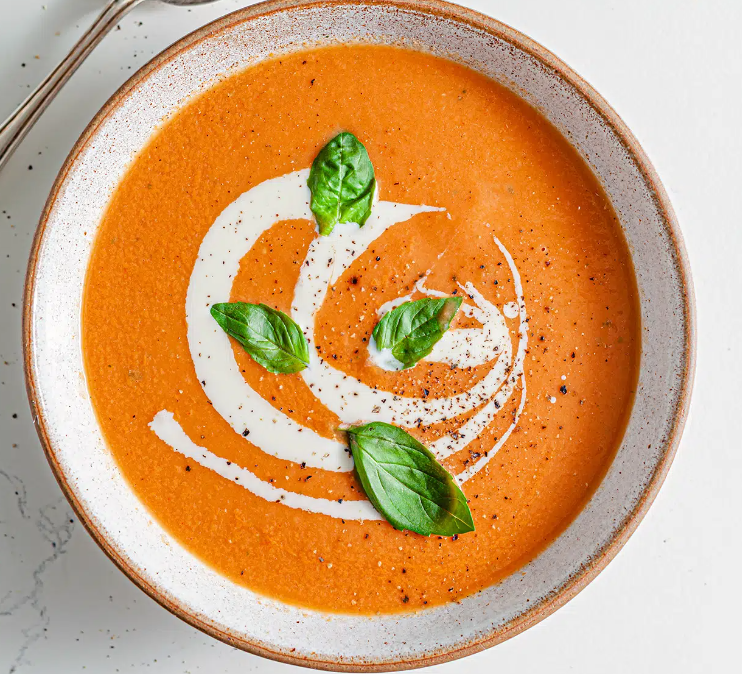

The olive oil makes this tomato soup extra creamy and delicious!
- 9-12 Roma Tomatoes
- 1 medium yellow onion, chopped
- 1/3 cup carrots, chopped
- 4 cloves of garlic, chopped
- 1 Tbsp Dried Basil
- 1 tsp Fresh Basil
- 1/4 cup Olive Oil
- 900 mL chicken broth
- 1 Tbsp balsamic vinegar
- Sea salt and black pepper
- Sour cream to garnish
- Preheat the oven to 350°F and line a large baking
sheet with parchment paper. Place the tomatoes cut side up on the baking sheet,
drizzle with 2 tablespoons of the olive oil, and sprinkle with salt and pepper.
Roast for 1 hour, or until the edges just start to shrivel and the insides are still juicy.
- Heat the remaining 2 tablespoons olive oil in a large pot over medium heat.
Add the onions, carrots, garlic, dried basil, and 1/2 teaspoon salt and cook until soft,
about 8 minutes. Stir in the tomatoes, vegetable broth, vinegar, and thyme leaves and simmer for 20 minutes.
- Let cool slightly and blend with an immersion blender.
Blend until smooth.
Add the fresh basil and pulse until combined.
- Season to taste, ladle into bowls, and garnish with fresh basil leaves and sour cream.